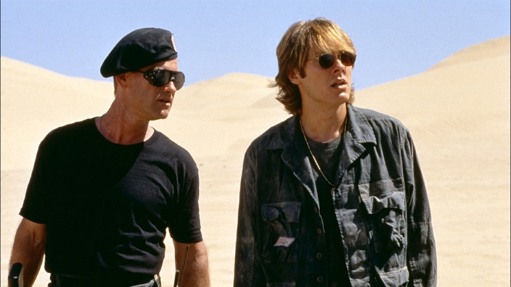
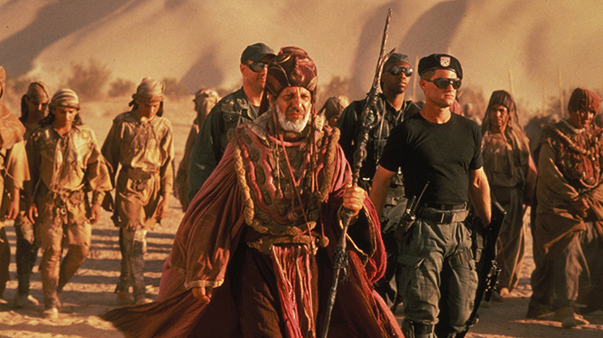
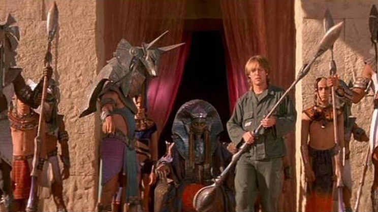

Faits divers
Accusation de plagiat
Omar Zuhdi, un étudiant en égyptologie a tenté de poursuivre les scénaristes pour plagiat, il affirmait leur avoir soumis le scénario une dizaine d'années avant la sortie du film sans succès, un de ses professeurs de l'université Johns-Hopkins lui avait même apporté son soutien. L'affaire a finalement été réglée en dehors des tribunaux. L'éditeur des bandes dessinées de La Trilogie Nikopol réalisées par Enki Bilal a également renoncé à intenter un procès à Roland Emmerich, les similarités (vaisseau spatial en forme de pyramide) étant sans doute des coïncidences.
55M$
Budget6
Récompenses130 min
Version cinéma121 min
Version longue





Présentation de la direction artistique
Direction artistique : Frank Bollinger, Peter Murton et Mark Zuelzke
Stargate, la porte des étoiles est né de deux films que Roland Emmerich et Dean Devlin ont imaginés séparément :
Necropolis: City of the Dead, écrit par Roland Emmerich durant ses études de cinéma à Munich en 1978, dont l'intrigue était centrée sur un
vaisseau spatial enterré sous la grande pyramide de Gizeh et le film imaginé par Dean Devlin qui devait être « Lawrence d'Arabie sur une
autre planète ». Pour relier les deux, le chef décorateur Oliver Scholl leur suggère l'idée d'un appareil de téléportation, qui deviendra
la porte des étoiles.
L'hypothèse sur laquelle se fonde le scénario s'inspire de la théorie ufologique des anciens astronautes, selon laquelle des extraterrestres auraient influencé le développement des civilisations anciennes dont les Égyptiens. Ce concept existe déjà dans La Guerre éternelle (1974) de Joe Haldeman et dans la série télévisée Buck Rogers (1979-1981). L'égyptologue Stuart Tyson Smith a été engagé comme consultant pour les dialogues en égyptien ancien et pour les hiéroglyphes. Pour cela, il a rencontré les scénaristes à plusieurs reprises durant la phase d'écriture du film, mais a aussi dû se prêter à l'exercice de la traduction en temps réel à cause des changements de dialogues pendant le tournage.
Avant le début du tournage, Peter Mitchell Rubin a créé un programme informatique pour imager entièrement le film avec un storyboard numérique, il a ainsi obtenu des images très réalistes. Selon Devlin, le travail fourni est « étonnant », il permet d'avoir un aperçu sur la lumière et l'emplacement des caméras dans des décors qui n'avaient pas encore été construits.
L'hypothèse sur laquelle se fonde le scénario s'inspire de la théorie ufologique des anciens astronautes, selon laquelle des extraterrestres auraient influencé le développement des civilisations anciennes dont les Égyptiens. Ce concept existe déjà dans La Guerre éternelle (1974) de Joe Haldeman et dans la série télévisée Buck Rogers (1979-1981). L'égyptologue Stuart Tyson Smith a été engagé comme consultant pour les dialogues en égyptien ancien et pour les hiéroglyphes. Pour cela, il a rencontré les scénaristes à plusieurs reprises durant la phase d'écriture du film, mais a aussi dû se prêter à l'exercice de la traduction en temps réel à cause des changements de dialogues pendant le tournage.
Avant le début du tournage, Peter Mitchell Rubin a créé un programme informatique pour imager entièrement le film avec un storyboard numérique, il a ainsi obtenu des images très réalistes. Selon Devlin, le travail fourni est « étonnant », il permet d'avoir un aperçu sur la lumière et l'emplacement des caméras dans des décors qui n'avaient pas encore été construits.
L'ambiance générale du film doit beaucoup au style des acteurs et des personnages qu'ils y incarnent.
Le personnage de Râ devait à l'origine être joué par un vieil homme, mais lorsque Jaye Davidson a été proposé par le producteur Mario Kassar,
Roland Emmerich l'a tout de suite sélectionné. Il est d'ailleurs très remarqué, ce genre d'acteur est assez rare dans un film de science-fiction :
Davidson cultivait à l'époque une apparence efféminée déjà vue dans le film The Crying Game et refusait même d'enlever ses piercings pour le
tournage. La motivation de cet acteur est essentiellement basée sur l'argent, il a en effet exigé un cachet d'un million de dollars afin de pouvoir
assurer ses achats excessifs de vêtements.
James Spader (Wolf), acteur considéré par le réalisateur comme plutôt sérieux et cultivé, joue le rôle de l’égyptologue qui va enfin pouvoir voir dans la réalité ce qu'il étudie, il profite donc de chaque instant. Kurt Russell, l'interprète du colonel O'Neil, est quant à lui plus habitué des rôles de films d’aventure (The Thing et New York 1997), mais il est suicidaire ce qui le rend dangereux et imprévisible. C'est ce duo militaire/scientifique aux objectifs différents, qui va devoir affronter le sinistre faux dieu Râ dans un monde encore à l'époque de l’Égypte ancienne.
Le choix de l'actrice pour le personnage de Sha'uri n'a pas été facile : c'est en regardant un film israélien quelques jours avant le tournage que Roland Emmerich s'est décidé et a choisi Mili Avital. Cette actrice israélienne née d'une mère égyptienne et d'un père marocain parle couramment l'hébreu et l'arabe, ce qui s'avère utile pour les dialogues dans des langues anciennes.
James Spader (Wolf), acteur considéré par le réalisateur comme plutôt sérieux et cultivé, joue le rôle de l’égyptologue qui va enfin pouvoir voir dans la réalité ce qu'il étudie, il profite donc de chaque instant. Kurt Russell, l'interprète du colonel O'Neil, est quant à lui plus habitué des rôles de films d’aventure (The Thing et New York 1997), mais il est suicidaire ce qui le rend dangereux et imprévisible. C'est ce duo militaire/scientifique aux objectifs différents, qui va devoir affronter le sinistre faux dieu Râ dans un monde encore à l'époque de l’Égypte ancienne.
Le choix de l'actrice pour le personnage de Sha'uri n'a pas été facile : c'est en regardant un film israélien quelques jours avant le tournage que Roland Emmerich s'est décidé et a choisi Mili Avital. Cette actrice israélienne née d'une mère égyptienne et d'un père marocain parle couramment l'hébreu et l'arabe, ce qui s'avère utile pour les dialogues dans des langues anciennes.
La bande originale du film a été composée par David Arnold39 et jouée par le Sinfonia of London sous la direction de Nicholas
Dodd. C'est grâce à ce film que ce compositeur se fait connaître comme compositeur pour le cinéma ; par la suite, celui-ci se lance dans la musique de
bien d'autres films tels que Independance Day ou plusieurs James Bond. Le thème principal composé d'instruments à vent, à cordes et de cuivres évoque par
ses consonances orientales la mythologie égyptienne. Cette sonorité est renforcée par la chanteuse Natacha Atlas d'origine égyptienne, qui participe
à deux titres de la bande originale, dont celle de la découverte de la porte des étoiles à Gizeh. La bande originale est sortie en CD le 8 novembre 1994
puis a été rééditée dans une nouvelle version, sortie le 17 octobre 2006.
Les effets spéciaux sont assurés par Len Wiseman (qui a travaillé par la suite sur les deux premiers volets de la saga Underworld,
Die Hard 4)31 et le dessin des costumes et des décors par Patrick Tatopoulos (Godzilla et Underworld 3 : Le Soulèvement des Lycans) alors qu'ils débutent
tous deux leur carrière à Hollywood. Leur œuvre et celles de leurs équipes sont considérées comme achevées pour l'époque notamment pour la séquence
d'ouverture du vortex de la porte des étoiles. Même si aujourd'hui au regard de l’amélioration des techniques dans les séries il peut sembler dépassé,
certains truquages peuvent même être constatés : les câbles servant à faire voler les chasseurs de la mort sont apparents ou encore le plan avec les trois
lunes de la planète qui correspondent à celle de la Terre sous différents angles.
Patrick Tatopoulos est le responsable de la réalisation des costumes extra-terrestres qui se révèle complexe : le travail pour le mastadge (créature utilisée comme animal de bât sur la planète) a nécessité la réalisation d'un costume mécanique. Celui-ci est porté par un Clydesdale, une race de chevaux de trait du même gabarit que le mastadge. Tatopoulos a aussi réalisé les costumes des dieux égyptiens Anubis (masque de chacal), Horus et Râ dont le masque a été sculpté. Il a collaboré avec Joseph A. Porro (responsable des costumes des figurants) et son équipe, dont la tâche était immense en raison de la variété des époques et des lieux. Pour la courte séquence se déroulant 8 000 ans av. J.-C., Joseph Porro ne disposait pas de données disponibles sur le type de vêtements portées à l'époque en Afrique du Nord, il a donc complètement inventé. Pour la scène de découverte de la porte des étoiles en 1928, près de 1 500 costumes ont été portés par les figurants et pour les habitants de la planète Abydos c'est entre 4 000 et 5 000 costumes qui ont été confectionnés en s'inspirant des vêtements portés par les Bédouins. Enfin les serviteurs de Râ ont été richement habillés : soie, velours et bijoux entièrement fabriqués à la main.
De nombreuses miniatures ont été utilisées afin de réduire les coûts de certaines scènes, c'est notamment le cas des détails des obélisques pour les gros plans, des planeurs de la mort et de certaines scènes de foules. Le Jet Propulsion Laboratory de la NASA a fourni le robot qui est envoyé en éclaireur à travers la porte des étoiles, dans la réalité il sert à accéder à des zones dangereuses pour l'Homme par exemple lors de catastrophes chimiques.
Patrick Tatopoulos est le responsable de la réalisation des costumes extra-terrestres qui se révèle complexe : le travail pour le mastadge (créature utilisée comme animal de bât sur la planète) a nécessité la réalisation d'un costume mécanique. Celui-ci est porté par un Clydesdale, une race de chevaux de trait du même gabarit que le mastadge. Tatopoulos a aussi réalisé les costumes des dieux égyptiens Anubis (masque de chacal), Horus et Râ dont le masque a été sculpté. Il a collaboré avec Joseph A. Porro (responsable des costumes des figurants) et son équipe, dont la tâche était immense en raison de la variété des époques et des lieux. Pour la courte séquence se déroulant 8 000 ans av. J.-C., Joseph Porro ne disposait pas de données disponibles sur le type de vêtements portées à l'époque en Afrique du Nord, il a donc complètement inventé. Pour la scène de découverte de la porte des étoiles en 1928, près de 1 500 costumes ont été portés par les figurants et pour les habitants de la planète Abydos c'est entre 4 000 et 5 000 costumes qui ont été confectionnés en s'inspirant des vêtements portés par les Bédouins. Enfin les serviteurs de Râ ont été richement habillés : soie, velours et bijoux entièrement fabriqués à la main.
De nombreuses miniatures ont été utilisées afin de réduire les coûts de certaines scènes, c'est notamment le cas des détails des obélisques pour les gros plans, des planeurs de la mort et de certaines scènes de foules. Le Jet Propulsion Laboratory de la NASA a fourni le robot qui est envoyé en éclaireur à travers la porte des étoiles, dans la réalité il sert à accéder à des zones dangereuses pour l'Homme par exemple lors de catastrophes chimiques.
Le générique d'ouverture a été filmé en motion control pour donner une meilleure profondeur de champ. Il fait référence au film Batman
(1989) : la caméra glisse sur le masque de Râ en finissant par un plan large de la même manière que sur le logo de Batman, le tout accompagné d'une musique
également jouée par un orchestre.
La conférence que donne Daniel Jackson au début du film a été tournée au Park Plaza Hotel à Los Angeles. Cette scène était à l'origine plus longue et développait davantage la manière dont les extra-terrestres ont construit les pyramides ; elle a cependant été coupée à cause des contraintes de temps avant la sortie du film. L'entrée d'un tunnel de l'Angeles Forest Highway a été utilisée pour filmer celle du Stargate Command; plus tard dans la série Stargate SG-1, c'est la véritable entrée de la base de Cheyenne Mountain dans le Colorado qui a été utilisée. Les scènes intérieures (base militaire, pyramide et vaisseau spatial) ont principalement été réalisées dans des décors montés dans des studios à Long Beach. Le plus grand décor intérieur est celui du vaisseau de Râ, un véritable palais d'environ 90 m de long sur 20 m de large et 12 m de haut. Les quelque 760 m2 de murs ont été gravés de motifs de hiéroglyphes à l'aide d'une machine, puis ont été peints couleur or en utilisant un processus chimique pour obtenir un effet antique. Des feuilles d'or ont aussi été appliquées sur le sol, cinq couches de vernis ont été nécessaires pour le protéger, et l'équipe de tournage devait porter des chaussons pour ne pas l'abimer.
Durant deux mois, la majeure partie des scènes extérieures a été tournée dans le désert à la frontière entre la Californie et l'Arizona, près de la ville de Yuma. Cela a rendu les conditions de tournage plus difficiles : le sable a posé de nombreux problèmes pour les déplacements et l'entretien du matériel; l'équipe de tournage a donc emprunté un matériau appelé « geoweb » utilisé durant la guerre du Golfe, qui permet de faire passer sans difficulté des véhicules sur le sable. Ensuite la température, qui peut atteindre les 52 °C, a nécessité un important approvisionnement en eau. Environ 16 000 figurants ont été employés pour les scènes de foule sur la dune, cette dernière n'était d'ailleurs plus vierge avant la fin du tournage en raison des nombreuses traces de pas. Malgré plusieurs techniques sophistiquées (hélicoptère et ventilateur géant), la seule solution fut de balayer la dune pour lui faire retrouver son aspect d'origine.
La conférence que donne Daniel Jackson au début du film a été tournée au Park Plaza Hotel à Los Angeles. Cette scène était à l'origine plus longue et développait davantage la manière dont les extra-terrestres ont construit les pyramides ; elle a cependant été coupée à cause des contraintes de temps avant la sortie du film. L'entrée d'un tunnel de l'Angeles Forest Highway a été utilisée pour filmer celle du Stargate Command; plus tard dans la série Stargate SG-1, c'est la véritable entrée de la base de Cheyenne Mountain dans le Colorado qui a été utilisée. Les scènes intérieures (base militaire, pyramide et vaisseau spatial) ont principalement été réalisées dans des décors montés dans des studios à Long Beach. Le plus grand décor intérieur est celui du vaisseau de Râ, un véritable palais d'environ 90 m de long sur 20 m de large et 12 m de haut. Les quelque 760 m2 de murs ont été gravés de motifs de hiéroglyphes à l'aide d'une machine, puis ont été peints couleur or en utilisant un processus chimique pour obtenir un effet antique. Des feuilles d'or ont aussi été appliquées sur le sol, cinq couches de vernis ont été nécessaires pour le protéger, et l'équipe de tournage devait porter des chaussons pour ne pas l'abimer.
Durant deux mois, la majeure partie des scènes extérieures a été tournée dans le désert à la frontière entre la Californie et l'Arizona, près de la ville de Yuma. Cela a rendu les conditions de tournage plus difficiles : le sable a posé de nombreux problèmes pour les déplacements et l'entretien du matériel; l'équipe de tournage a donc emprunté un matériau appelé « geoweb » utilisé durant la guerre du Golfe, qui permet de faire passer sans difficulté des véhicules sur le sable. Ensuite la température, qui peut atteindre les 52 °C, a nécessité un important approvisionnement en eau. Environ 16 000 figurants ont été employés pour les scènes de foule sur la dune, cette dernière n'était d'ailleurs plus vierge avant la fin du tournage en raison des nombreuses traces de pas. Malgré plusieurs techniques sophistiquées (hélicoptère et ventilateur géant), la seule solution fut de balayer la dune pour lui faire retrouver son aspect d'origine.